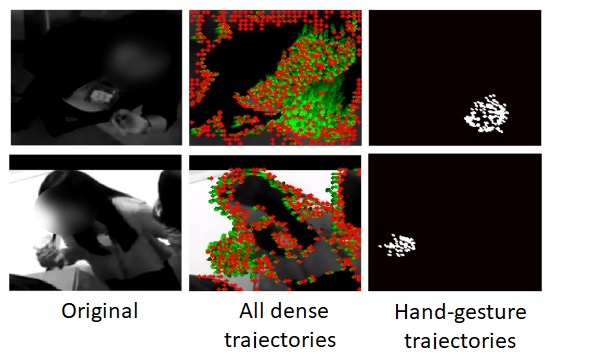

Projects and Resources
Datasets
Match N Mingle dataset

The MatchNMingle (MnM) is a novel multi-sensor resource for the analysis of social interactions and group dynamics in-the-wild during free-standing conversations and speed dates, available openly for research purposes. It was recorded in-the-wild during 3 speed date events, each followed by a mingle (cocktail party). All events took place in a public bar with a total of 92 participants which were not acquaintance before the event.
It consists of 2 hours of data from wearable acceleration, binary proximity, video, audio, personality surveys, frontal pictures and speed-date responses. Participants’ positions and group formations were manually annotated; as were social actions (walking, stepping, drinking, speaking, hand gesture, head gesture, laugh) for 30 minutes at 20fps making it the first dataset to incorporate the annotation of such cues in this context
For more information, please visit the dataset website.
Current projects
TBA
Previous projects
ALARM project

The ALARM (Alarm-Limiting AlgoRithm-based Monitoring) project consisted of model-based predictive monitoring for neonatal intensive care units, developed by the e/MTIC innitiative and in a collaboration between TU Eindhoven, the Maxima Medical Center (MMC) and Philips research (Eindhoven headquarters).
The project aims to develop new monitoring techniques for improved and efficient diagnosis, but also leveragin data mining approaches to reduce the high number of alarms in the intensive care environment (neonatal and adult ICU) in order to increase patient safety and reduce alarm fatigue of the staff. Neonates infants are a particualrly vulnerable population, and improving monitoring of maturation of neonates is important to predict patient outcome.
The project is lead by Dr. Carola van Pul (contact).
Multimodal detection of gestures in-the-wild

Whereas most efforts related to gestures are focus on applications for Human-Computer interaction, not much has been done about detecting gestures as an inherent part of social interactions.
This project addresses the detection of hand gestures during free-standing conversations in crowded mingle scenarios. Unlike the scenarios of the previous works in gesture detection and recognition, crowded mingle scenes have additional challenges such as cross-contamination between subjects, strong occlusions, and nonstationary backgrounds. This makes them more complex to analyze using computer vision techniques alone.
We propose a multimodal approach using video and wearable acceleration data recorded via smart badges hung around the neck. In the video modality, we propose to treat noisy dense trajectories as bags-of-trajectories. For a given bag, we can have good trajectories corresponding to the subject, and bad trajectories due for instance to cross-contamination. However, we hypothesize that for a given class, it should be possible to learn trajectories that are discriminative while ignoring noisy trajectories. We do this by exploiting multiple instance learning via embedded instance selection as our multiple instance learning approach.
See related paper here.